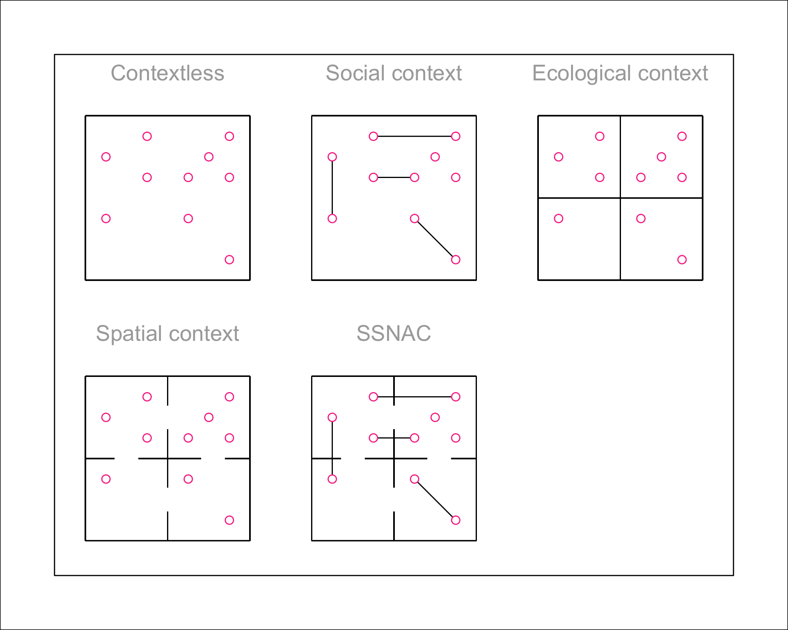
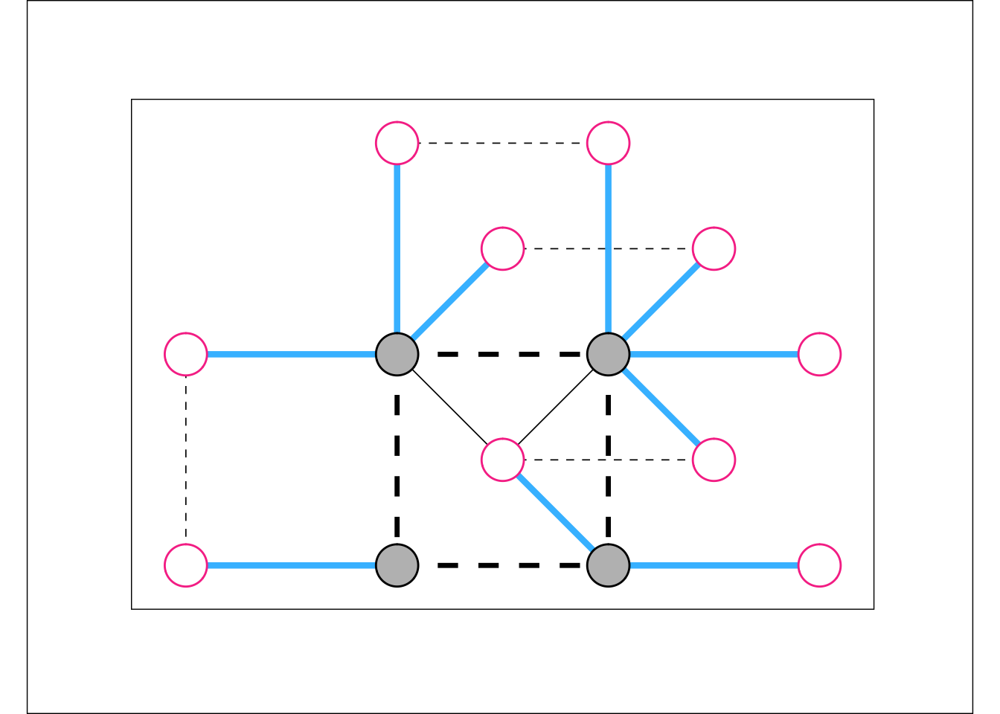

Code
# Access custom defined functions
targets::tar_source(files = paste0(here::here(), "/R_functions"))# Access custom defined functions
targets::tar_source(files = paste0(here::here(), "/R_functions"))Social process and relationships to some extent play out in physical space since humans exist and interact in physical space. Network theorists have observed that, for instance, the relation of trust is heavily dependent on the physical context under consideration, along with the social context. For instance, Small, found that women were x more likely to trust strangers to take care of their own children on the premises of a school compared to in public spaces. Another example the idea of propinquity, that spatial nearness between people shapes their likeihood of forming relationships attest to the influence of the spatial on the social.
Physical space, therefore, is an important aspect of any social enquiry. It should be surprising, then, that current models for quantitative causal inference do not consider space as a structure that arrays most causal processes under investigation. On the other hand, the scholarly tradition of causal inference in epidemiology has proven its refusal time and again to develp models that make sense of the social per se, opting rather to concern itself with the causal effects of abstract interventions on the outcomes of contextless humans.
The SSNAC is a byproduct of an enquiry into the interactions of people in the city as a space. It concerns itself with patterns of connection between places as a result of the exchange of people. Obversely, it concerns itself with patterns of interaction between people as a result of the places they coinhabit.
In this study, we enquire about a specific type of social interaction (group sex) in the spatial context it unfolds in. We consider both the proximal spatial context of the hotel room, apartment, or park in which the sex happens as well as the more distal spatial context of the census tract, neighborhoods, district, or borough that is the context of the context.
We were initially interested in understanding how to distribute mpox vaccine to gay men in the most efficient way, given the measured structure of the sexual and social networks we form. We had been struck, in the aftermath of the initial mpox outbreak, at the willingness of informed and uninformed experts to attribute the rapid dissemination of this pathogen in this group to the “structure” of our “sexual network” without studying that structure. Indeed, even if they had consulted the research literature, they would find very few studies that actually measured networks. The vast majority of studies on social networks and health measure what they term egocentric networks. The way those measures are taken, however, almost always guarantees that the actual object under study are the perceptions of study participants of their own social networks.
We aimed to measure these networks directly and indirectly in order to test some of the explanations offered for the rapid dissemination of mpox and to inform responses. In the process of solving some of the practical challenges occasioned by this endeavor, we developed the major components of the Social Spatial Network Analysis with Causal interpretation framework, which we outline here.
In the process of solving some practical study design-related problems, we developed the major components of SSNAC. Before we outline these, let us explain the problems.
The study was designed to minimize the risk posed to participants by the collected data set, once it was available to the public. It is anonymous to ensure that information about participant identities or sexual practices are not linked with any individual. At the same time, we wanted to measure the social and sexual networks of participants through chain referral and we wanted to measure the location of the places participant have sex at.
To conduct chain referral without collecting identfying information (such as phone numbers or email addresses), we designed a system that uses the native messaging apps used on android and apple phones. Towards the end of the survey, participants are prompted to share the survey with friends and sexual partners. If they agree to share the survey, the survey instrument generates a survey url and prompts the user to share it using any of the methods their phone allows. When browsing the url, the receiver would either be prompted to enter a code-name that was assigned to them by the app if they already completed the survey, or would be presented with survey questions if not. The code-name is provided to particiants when they first take the survey . It is provided as an image file with the code-name printed in text and as a QR code. The participant is prompted to save this image file on their phone. Exceedingly few participants used the chain referral, so we did not present any data.
The initial challenge to overcome in measuring the location of places participants had sex in was that, in our view, participants would be unwilling or unable to recall the exact names, addresses, zip codes, or even cross-streets of the places they had met. If we managed to overcome that challenge, the next was to record locations without compromising the anonymity of the participants.
The former challenge was overcome by creating the same experience for the participant as they would have if they were finding a place using the map application on their phone. We used the google maps APIs to display a map in the survey instrument that has a similar interface as the google maps app does (search box; ability to zoom and pan; street, place and landmark names displayed). Through this interface, participants were asked to enter locations by tapping on the map and answering questions related to that particular place.
We had planned to address the latter challenge by tasselating the map and saving only the coordinates of the tile containing each set of spatial coordinates. We ended up sending the spatial coordinates yielded by the google maps interface to a reliable API which converts spatial coordinates to census tract identifiers. Census tracts partition the map of the U.S. into spatial units containing XXX to XXX residents. The study database contains only the census tract identifiers of the places participants reported.
Because we expected to collect network data, they survey instrument’s backend was designed as a neo4j network database whereas most study data are recorded in relational databases. Storing the data in this way was useful because the databse system allows users to query the database through a sequence of network operations. The drawback of using relational databases would have been increased computing time for large datasets as it would be necessary to lookup and join datases repeatedly. The network database platform avoids this by saving all the relationships between entities in the database as a network and quering the network.
Once we had completed preliminary analyses and started working on a comprehensive report, we struggled to maintain consistency across different analyses because of the sheer number of data wrangling operations. We had been attempting to use the dataset by creating many smaller datasets for analysis. Inspired by neo4j, we decided to keep the data as a network and to then analyse it through network operations.
In doing this, we came to appreciate the tidygraph package, which gives users a tidy experience with the core functions of the igraph package. The tidygraph package represents the network as two related tables (tibbles): a table of nodes, which also includes node characteristics, and a table of edges, which also allows for edge characteristics. The SNACC framework owes a debt to the developers of tidygraph - the ability to analyze network data effectively is made possible by the ability to filter nodes and edges for different sets of analyses. But this package was not designed for epidemiologists. We developed some custom functions for common network operations such as grouping nodes into larger nodes, or summarizing the values of all the nodes connected to a given node. The idea of keeping the dataset in what we term the Person-place Graph below, however, comes from the experience of usuing tidygraph to query mpx nyc data efficiently for the different analyses we taksed ourselves with.
Finally, though we used some measures in the analysis which are difficult to statistically model, we wanted to give some indication of the precision of all the measures we report. We used the bootstrap, which assumes that individual participants in the study are independent of each other. Yet, the analysis concerns itself with how the population represented by the participants interact in space, suggesting that inter-dependence among the participants is a better assumption than independence.
We have two empirical reasons for assuming independence: firstly, the low participation rate on the chain referral suggest that participants entered the survey because of advertising and not because of the influence of their social contacts. Secondly, advertising was done accros different channels, but the majority of the participants were recruiterd after two distinct ads flighted on the same day accross New York City. Only 1300 responded, which is a small proportion of the study population. We understand each individual participant to stand in for a subgroup in the population with the same characteristics, who would all live and have group sex in the same spatial units as the participant has selected. We assume that the individual participants who are in our study are sufficiently removed from each others immediate social and sexual networks that their responses are independent of each other.
Having made the assumption that participants are independent, we conducted the bootstrap by repeatedly sampling from the list of participants with replacement. For each sample, a full synthetic Person-place graph was constructed. Each of these were merged into one network object. For a given measure, we constructed confidence intervals by computing the measure separately on each synthetic Person-place graph and taking quantiles.
To motivate the framework, we consider a study investigating the risk of acquiring a cold among individuals (pictured as dots in physical space in each frame of Figure F.1) in a setting where there is one known infected person. The simplest approach would be to assign average risk of acquiring a cold to each individuals. The problem with this strategy, though, would be that not all individuals have the same risk once we know who the infected person is. Those who are more likely to interact closely with them have higher risk, but not all people are equally likely to interact.
mpxnyc_colors <- targets::tar_read(config_list)[[1]][["content"]][["colors"]]
example_context_graph_base <- function(title = ""){
x_coords <- c(1, 1, 2, 2, 3, 3, 3.5, 4, 4, 4)
y_coords <- c(2, 3.5, 3, 4, 2, 3, 3.5, 1, 3, 4)
coords <- data.frame(x = x_coords, y = y_coords)
nodes <- data.frame(name = paste("node", 1:10, sep = "_"))
edges <- data.frame(
from = c("node_1", "node_4", "node_3", "node_5"),
to = c("node_2", "node_10", "node_6", "node_8")
)
example_context_graph <- tidygraph::tbl_graph(nodes = nodes, edges = edges)
ggraph::ggraph(example_context_graph, coords) +
ggplot2::ylim(0,5) +
ggplot2::xlim(0,5) +
ggplot2::theme_void() +
ggplot2::coord_fixed() +
ggplot2::ggtitle(title) +
ggplot2::theme(plot.title = ggplot2::element_text(hjust = 0.5, size = 20, color = "darkgrey"))
}
example_context_graph_outline <- function(plot){
plot +
ggplot2::geom_linerange(y = 0.5, xmin = 0.5, xmax = 4.5) +
ggplot2::geom_linerange(y = 4.5, xmin = 0.5, xmax = 4.5) +
ggplot2::geom_linerange(x = 0.5, ymin = 0.5, ymax = 4.5) +
ggplot2::geom_linerange(x = 4.5, ymin = 0.5, ymax = 4.5)
}
example_context_graph_inner_division <- function(plot){
plot +
ggplot2::geom_linerange(y = 2.5, xmin = 0.5, xmax = 4.5) +
ggplot2::geom_linerange(x = 2.5, ymin = 0.5, ymax = 4.5)
}
example_context_graph_inner_gates <- function(plot){
plot +
ggplot2::geom_linerange(y = 1.5, xmin = 0.6, xmax = 4.4, size = 10, color = "white") +
ggplot2::geom_linerange(y = 3.5, xmin = 0.6, xmax = 4.4, size = 10, color = "white") +
ggplot2::geom_linerange(x = 1.5, ymin = 0.6, ymax = 4.4, size = 10, color = "white") +
ggplot2::geom_linerange(x = 3.6, ymin = 0.6, ymax = 4.4, size = 10, color = "white")
}
example_context_graph_nodes <- function(plot){
plot +
ggraph::geom_node_circle(
ggplot2::aes(r = 0.1),
fill = "white",
color = mpxnyc_colors$dark_pink
)
}
example_context_graph_edges <- function(plot){
plot +
ggraph::geom_edge_link()
}
contextless <- example_context_graph_base("Contextless") |>
example_context_graph_outline() |>
example_context_graph_nodes()
social_context <- example_context_graph_base("Social context") |>
example_context_graph_outline() |>
example_context_graph_edges() |>
example_context_graph_nodes()
ecological_context <- example_context_graph_base("Ecological context") |>
example_context_graph_outline() |>
example_context_graph_inner_division() |>
example_context_graph_nodes()
spatial_context <- example_context_graph_base("Spatial context") |>
example_context_graph_outline() |>
example_context_graph_inner_division() |>
example_context_graph_inner_gates() |>
example_context_graph_nodes()
ssnac_context <- example_context_graph_base("SSNAC") |>
example_context_graph_outline() |>
example_context_graph_inner_division() |>
example_context_graph_inner_gates() |>
example_context_graph_edges() |>
example_context_graph_nodes()
cowplot::plot_grid(contextless, social_context, ecological_context, spatial_context, ssnac_context) +
theme_mpxnyc()
A social network analysis would gain a more granular understanding of risk by assigning people who are connected to other people a higher risk of acquiring the cold than those who have no relationships. In addition, different connected components of the network could be assigned differnet levels of risk.
An ecologic approach would be to divide up the area into households and assign a different level of risk based on the household (third panel from left). If we knew who has a cold, we could assign people in the same household higher risk for acquiring the cold than others. This anlysis, however, would ignore the fact that households are not equally connected.
A spatial analysis would enhance this analysis by enriching household data with a spatial weights matrix indicating which pairs of households are neighrbors (second panel from right). Then the risk of aquiring a cold in a given household would be a function of the risk of aquiring a cold among individuals in neighboring households.
An SSNAC analysis (rightmost panel) would take advantage of both spatial and social network data, assigning risk so that the risk of acquiring the cold is a function of the household the individual belongs to, the neighboring household, and the social network connections.
The SSNAC framework is an approach to collecting, analyzing and interpreting data which explicitly accounts for relationships among people, the places they physical places they interact in or co-inhabit.
It is applicable in two situations: when investigators want to describe the patterns in the relations among people, places, and across people and places; or when investigators are interested in inferring causality in the context of the system formed by people and places.
For the descriptive interest, it is necessary to have data on individuals, the physical spatial units they co-inhabit, relationships among individuals (network data), as well as the relationships among spatial units (spatial weights matrix).
For the causal interest, it is necessary for the investigator should have the data mentioned above, as well as a theory or set of theories about the causal process under investigation. These theories must explicitly state:
the meaning of nodes (which entities they represent)
the meaning of ties (how they relate the entities they link)
an understanding of which ties are relevant to the causal question under investigation
The central data structure in a SSNAC is the person-place graph. Figure F.2 depicts the rightmost frame of Figure F.1 by showing spatial units as nodes in a network, connecting adjacent spatial units with a network edge, and connecting individuals with the households they belong to. To show the flexibility of this data object, we added an additional type of relationship an individual can have with a household - that of an employee.
The majority of study data are stored as node or edge attributes. For instance, person nodes might have attributes like age and race whereas place nodes could have attributes like density or surface area. An edge linking a person to a place might have an attribute conveying how the person relates to the place. For instance in Figure F.2, some edges indicate residence, some indicate next
data_snac_example <- function(){
snacc_nodes <- data.frame(
name = paste("node", 1:14, sep = "_"),
node_type = c(rep("Person", 10), rep("Place", 4))
)
snacc_edges <- data.frame(
from = c("node_1", "node_3", "node_4", "node_5", "node_11", "node_11", "node_12", "node_13", "node_11", "node_11", "node_11", "node_12", "node_13", "node_13", "node_13", "node_13", "node_14", "node_14", "node_11", "node_13"),
to = c("node_2", "node_6", "node_7", "node_8", "node_12", "node_13", "node_14", "node_14", "node_1", "node_3", "node_4", "node_2", "node_6", "node_7", "node_8", "node_9", "node_5", "node_10", "node_5", "node_5"),
edge_type = c(rep("Friend", 4), rep("Neighbor", 4), rep("Resident", 10), rep("Employee", 2))
)
tidygraph::tbl_graph(nodes = snacc_nodes, edges = snacc_edges)
}
plot_ssnac_example <- function(){
example_snacc_graph <- data_snac_example()
coords <- data.frame(
x = c(1, 1, 2, 2.5, 2.5, 3, 3.5, 3.5, 4, 4, 2, 2, 3, 3),
y = c(2, 1, 3, 2.5, 1.5, 3, 2.5, 1.5, 2, 1, 2, 1, 2, 1)
)
ggraph::ggraph(example_snacc_graph, coords) +
ggraph::geom_edge_link2(ggplot2::aes(edge_linetype = edge_type, edge_width = edge_type, edge_color = edge_type)) +
ggraph::geom_node_circle(ggplot2::aes(r = 0.1, color = node_type, filter = node_type == "Person"), fill = "white") +
ggraph::geom_node_circle(ggplot2::aes(r = 0.1, color = node_type, filter = node_type == "Place"), fill = "grey")
}
style_ssnac_example <- function(plot){
mpxnyc_colors <- targets::tar_read(config_list)[[1]][["content"]][["colors"]]
edge_width_key <- c("Employee" = 0.3, "Friend" = 0.3, "Neighbor" = 1.2, "Resident" = 1.5)
edge_linetype_key <- c("Employee" = 1, "Friend" = 2, "Neighbor" = 2, "Resident" = 1)
node_color_key <- c("Person" = mpxnyc_colors$dark_pink, "Place" = "black")
edge_color_key <- c("Employee" = "#000000", "Friend" = "#000000", "Neighbor" = "#000000", "Resident" = mpxnyc_colors$mid_blue)
plot +
ggplot2::theme_void() +
ggplot2::coord_fixed() +
ggraph::scale_edge_width_manual("Edge type", values = edge_width_key) +
ggraph::scale_edge_linetype_manual("Edge type", values = edge_linetype_key ) +
ggplot2::scale_color_manual("Node type", values = node_color_key) +
ggraph::scale_edge_color_manual("Edge type", values =edge_color_key ) +
ggplot2::theme(
legend.margin = ggplot2::margin(15, 15, 15, 15),
)
}
plot_ssnac_example() |>
style_ssnac_example() +
theme_mpxnyc()
The Person-place graph is a starting point for constructing a causal model, but it is not sufficient. Depending on the causal question, some edges in this graph are relevant and some are not. For example, if we were interested in a rumor network, we might decide to depict only people and not places in the causal graph. We might also choose to ignore the neighbor edges and focus only on the friend and employee ones, if it is the case that rumours are transmitted within households and across friendships but not to neighbors.
If we were interested in an infectious disease, and in the study setting, there is a stay-at-home order so that friends do not meet, but neighbors possibly meet, then we might keep the neighbor ties and drop the friend and employee ties. In either case, it is necessary to make changes to the Person-place network through network operations like ignoring or adding ties, or even grouping nodes to form a different graph altogether.
We explore this in the Analysis appendix.
There are four types of causal queries that focus on node-level outcomes in the SNACC framework.
Person-To-Place: Evaluating the causal impact of a person-level intervention on place-level outcomes for some defined set of people and some defined set of places. e.g. What is the impact of vaccinating college-aged adults in New York City on mpox incidence in Union Square (a favourite hangout spot for college students)
Person-to-Person: Evaluating the impact of a person-level intervention on person-level outcomes for some defined sets of people. e.g. How does vaccinating all cisgender white men in New York City affect mpox incidence among Black and Latinx cisgender black men in New York City?
Place-to-Place: Evaluating the impact of a place-level intervention on place-level outcomes for some defined sets of places. e.g How does vaccinating Manhattan affect mpox incidence in Brooklyn?
Place-to-Person: Evaluating the impact of a place-level intervention on person-level outcomes for some defined set of people and some defined set of places. e.g. How does vaccinating Harlem affect mpox incidence among cisgender black men in New York City
In addition there is an endless potential for constructing causal queries that focus on characteristics that cannot be represented as node characteristics for any single node, but rather are characteristics that emerge as a result of the pattern of interactions among nodes. For examples, see the section on social causal inference.